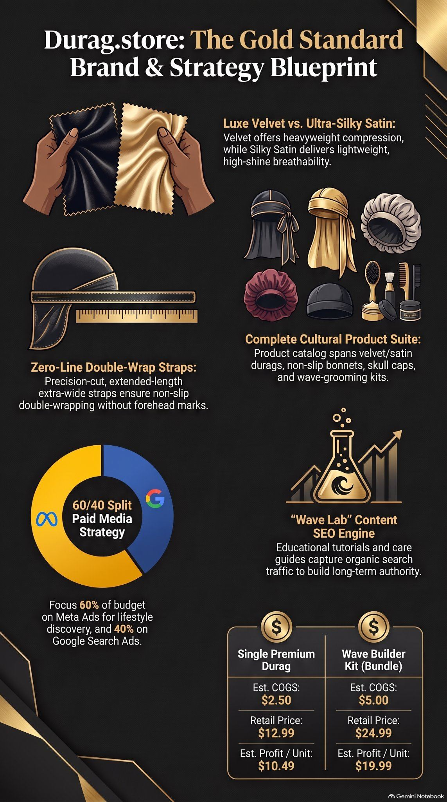

How Long to Wolf: The Timeline by Hair Type and Texture
Ask ten wavers how long to wolf and you will get ten numbers, all correct — for their hair. Wolf length is governed by curl diameter: the tighter the curl, the sooner each strand completes its S and the sooner extra length stops helping and starts over-curling. PhdInWaves (@Phdinwaves) covers the underlying science in the video below. This guide gives working ranges by texture — and the physical signs that end a wolf regardless of what the calendar says, because hair does not read calendars.
The ranges by texture
Coarse, tightly curled hair (the classic wave texture): four to six weeks is the productive band. The pattern deepens fast and over-curl arrives early — many coarse-haired wavers find their peak at week five and schedule cuts accordingly. Medium textures: six to eight weeks, with the depth still building through week seven.
Wavy and looser textures: eight to twelve weeks is normal, and some loose textures run longer still — their curl needs the length to express at all, so the wolf is not a phase but the main event. Straight-leaning hair attempting waves lives at the far end of this range permanently, paired with maximum compression time.
The signs that override the calendar
End the wolf early if: the lay starts fighting you daily despite full sessions (over-curl arriving); the scalp becomes hard to keep clean and comfortable under the mass; or life events demand the fresh cut and the wolf's remaining gains are marginal. A wolf ended two weeks early, cut well, loses almost nothing.
Extend the wolf if: connections are visibly forming week over week in your photos, the lay still sets cleanly after sessions, and the scalp is healthy. Momentum is information. The ranges are starting points for your first measured wolves; after two or three cycles, your own photo log outranks any table — including this one.
Building your personal schedule
Run one deliberate, photographed wolf: note the week the depth peaked and the week the lay began to fight. Those two numbers define your cycle permanently — peak week is your cut target, fight week is your hard limit. Write them where you track your cuts.
Then repeat the cycle without renegotiating it each time. The wavers with the deepest patterns are not the ones with secret products; they are the ones who found their number and ran it, season after season, like a training program — because that is exactly what it is.
Keep the seasons in the plan as well: many wavers run their longest wolfs through winter, when hats and hoods hide the in-between weeks, and cut to their sharpest for summer. The calendar on the wall and the calendar in your hair can work together.
Watch: the benefits and science of wolfing from PhdInWaves — the reasoning behind these ranges
Video: “Wolfing 360 Waves EXPLAINED | Benefits + Science of Wolfing” by PhdInWaves (@Phdinwaves) · Watch on YouTube
Shop the gear
Everything in this guide runs on the right gear: a durag that holds compression without slipping, a cap that stays put, and fabric that treats your hair right. The durag.store launch lineup is built to that standard — dual-layer construction, long tails, and stitching made to survive the routine. Join the launch list and use code GOLDSTANDARD for 15% off your first order.
Keep learning
- How to Get 360 Waves: The Complete Beginner Roadmap — Basic · Wave Training
- Waves in One Day: The Wash Method for Instant Definition — Basic · Wave Training
- 540 Waves: The Diagonal Pattern for Wavers Ready to Level Up — Extreme · Wave Training
Sources: Video — “Wolfing 360 Waves EXPLAINED | Benefits + Science of Wolfing” by PhdInWaves (@Phdinwaves), youtube.com. Guide written by the durag.store Wave Lab.